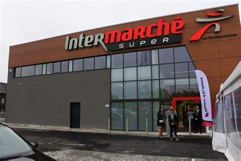

Intermarché, proche des consommateurs
Intermarché mise sur une politique de prix attractifs tout en mettant en avant des produits français. C’est une enseigne très populaire dans les zones rurales et semi-urbaines.
Intermarché mise sur une politique de prix attractifs tout en mettant en avant des produits français. C’est une enseigne très populaire dans les zones rurales et semi-urbaines.